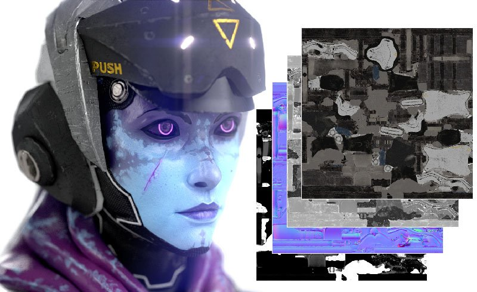

Textures are exported as a collection of bitmaps. Painter offers a lot of flexibility when exporting textures thanks to Output templates. Output templates let you control things like the naming of exported files, how textures are packed into channels, and the format and bit depth of the exported files. If this sounds intimidating, don't worry, Painter includes dozens of default Output templates that are configured for commonly used 3D applications and use cases.
You open the Export window and start exporting textures with File > Export Textures, or use keyboard shortcut CTRL + SHIFT + E. Use the following links to learn more about Exporting textures:
Painter can modify your imported mesh, for example, by automatically generating UVs. If you've made changes to the mesh in Painter, you can export the mesh with File > Export Mesh.
When exporting a mesh you will have a few options:
